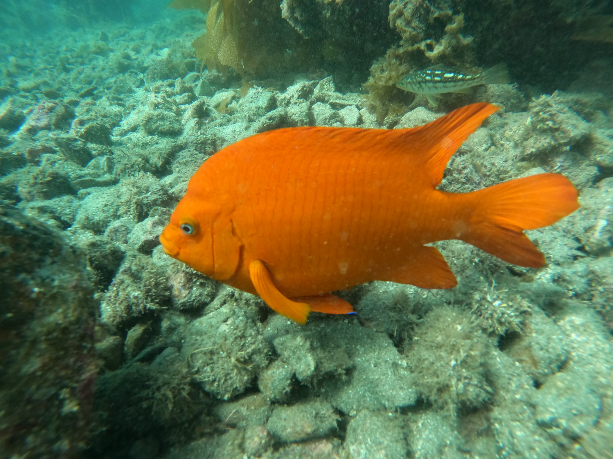

Scuba Diving
NoteDiving Certifications
- NAUI Open Water Scuba Diver
- NAUI Open Water Scuba Diver
- NAUI Rescue Diver
- NAUI Nitrox Diver
- AAUS Lead Diver
- AAUS Scientific Diving
- Diver’s Alert Network First Aid, CPR/O2
NoteAbout My Diving Experience
I have completed over 20 dives along the Santa Barbara coastline including recreational, training, and scientific diving focusing on kelp forest ecosystems and marine biodiversity.
Scuba Diving Photography

Garibaldi Fish at Refugio State Beach, March 2026
 Anacapa Island Kelp Forest, November 2025
Anacapa Island Kelp Forest, November 2025
Dive Site Interactive Map
Below is an interactive map showcasing the different dive site locations I have had the opportunity to explore.
Map Code
The code used to create this interactive map can be found in my GitHub repository: